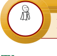

Chapter Three
Sole proprietorship
Introduction
The businesses around us are either owned by a single person or a group of people. Majority of those businesses (for example, retail stores, beauty salons, barbershops, small restaurants and motor vehicle repair centres) are owned by single persons. In this chapter, you will learn about the concept of sole proprietorship, their formations (start-up), and ways of solving the challenges they face. The competencies developed will enable you to start and operate business as a sole proprietor.

Think
Important things to consider before starting a personal business.
The concept of sole proprietorship
Activity 3.1
Read the scenario and answer the questions that follow.
Juliana is a talented tailor with a desire of sharing her clothing designs to the world. After being employed for several years in the tailoring industry, she later decided it was time to start her own tailoring business. She began her entrepreneurial journey by setting up a small tailoring shop in her neighbourhood as shown in Figure 3.1. The business required a small sum of startup capital. Juliana used her personal savings as capital to start the business. She purchased sewing machines and other supplies for the business. Since she is the only owner of the business, she makes all decisions, retains all profits, and bears all the responsibilities and operational costs generated by the business. This financial independence allows her to make strategic decisions and reinvest in the business for growth.
Student’s Book Form One